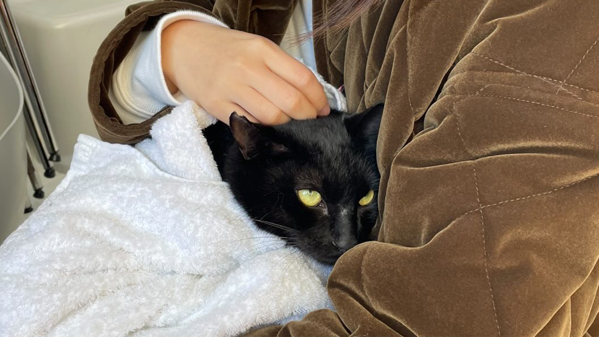

里親をご希望の方へ
譲渡会の流れ
- 譲渡会にて猫とお見合い
- 譲渡会にご参加頂き、気になる猫と触れ合って頂きます。
個別のお見合いについては、預かりボランティアさんの自宅が各地に点在していることもあり、承っておりません。 - トライアルの申し込み
- 譲渡会で気になる猫と出会えた場合は、トライアルをお申込みください。
お申込みは譲渡会会場にて、エントリーシートへのご記入で承ります。
譲渡会当日その場での猫のお引渡しは行いませんのでご了承ください。 - お引渡し
- 日程調整の上、猫をお届けに伺います。
その際、生活環境となる室内の確認をさせて頂きます。 - トライアル期間
- トライアル期間は2週間設けています。
トライアル期間中は猫の様子を写真付きでお知らせください。
トライアル期間を延長する事も可能です。 - 正式譲渡
- トライアル期間の終了後、こちらからご意思の確認をさせて頂きます。
問題ない場合は、譲渡契約書を取り交わし、正式譲渡となります。

譲渡の条件
- 生涯ご家族の一員として大切に育ててくださる方
- ペット可の住居にお住まいの方
- 単身者でない方
- 18歳以上の方
- ご家族全員の同意がある方
- ご家族に猫アレルギーのいない方
- お子様が小学生以上の方
- 未婚のカップルでない方
- 年1回は状況をお知らせ下さる方
- 万が一飼育できなくなった場合こちらに戻して下さる方